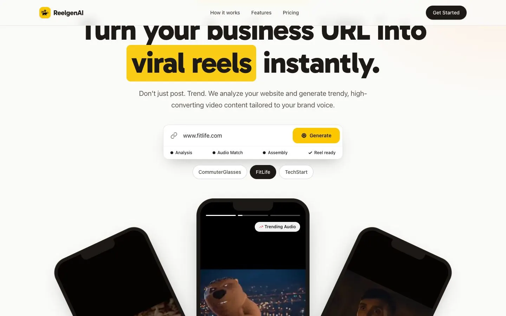

ReelgenAI
Turn a business URL into short-form reels.
ReelgenAI is a marketing tool that reads a business website and generates short vertical video for Instagram, TikTok and Shorts. It is aimed at small business owners who have no video team.
Visit reelgenai.com
Design decisions
- The hero headline is set in a very heavy sans with "viral reels" on a yellow highlighter block, so the one phrase that sells the product is the loudest thing on the page.
- The URL box sits directly under the headline with a yellow Generate button (#FACC15 family) and a four-step progress row (Analysis, Audio Match, Assembly, Reel ready) that shows the pipeline before anything is typed.
- Sample brand chips (CommuterGlasses, FitLife, TechStart) fill the input with an example URL and change the reel in the phone mockups, so a visitor can try the idea without typing anything.
- Palette is warm off-white with near-black stone text and one saturated yellow; the closing band repeats the URL input on a full yellow field with a small film-reel cat mascot.
- Body text uses the system sans stack; there is no dark theme, and the page looks the same under a dark colour scheme.
On a phone

ReelgenAI has a single theme, so there is one set of captures.
The flow, step by step



Further down the page